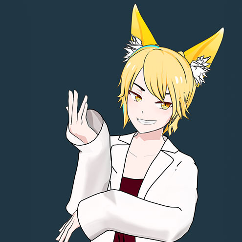
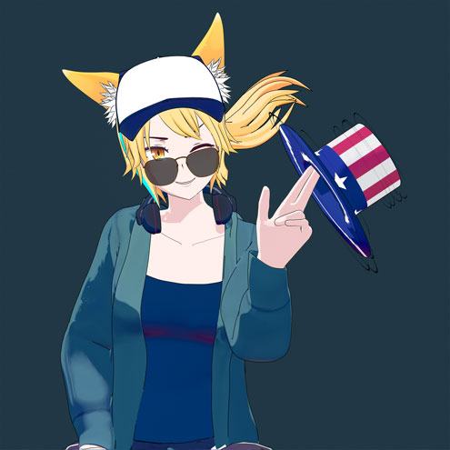

モデル制作/修正
キャラクターやプロップモデリングからスキニング等の3D化
VRM等のVR用途から手付け用リグ等作業
既存モデルのデータ修正等も可能です
I can do character and prop modeling, skinning, 3D VR setup, rigging, and data correction of existing models.
CG技術相談

CGの活用に関するノウハウ共有や不明点等技術運用面のコンサルタントとしても稼働出来ます
I can also work as a consultant for sharing know-how and resolving technical issues related to CG utilization
PV/MV制作

PVやMV等の映像制作も可能です。
blender UE5 Unity等を用いてリアル寄りアニメ寄り等柔軟に対応します
求めるテイスト含めてご相談下さい
Please consult us for PVMV production. We can flexibly respond to your needs by using various software such as blender, UE5, unity, etc.